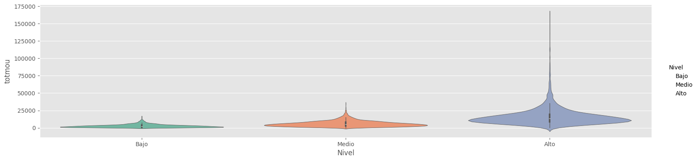
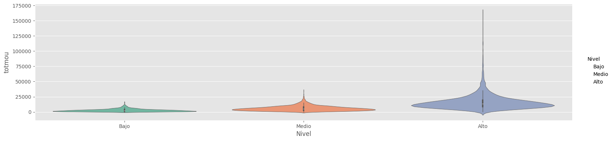

Uso de Pandas#
En el desarrollo de este caso introduciremos las librerías pandas, numpy y matplotlib para el preprocesamiento, visualización de un conjunto de datos y el desarrollo de algunas medidas estadísticas descriptivas.
Pandas
Pandas es la librería aliada para el análisis de datos, con ella puede cargar fácilmente datos en formato CSV, Excel, SQL, entre otros. Además, permite realizar operaciones de filtrado, limpieza, transformación y análisis de datos.
Introducción#
La revisión del comportamiento de los clientes en cualquier empresa es de vital importancia para el desarrollo de estrategias tanto de mejoramiento de productos como de publicidad y toma de decisiones. Evaluaremos la información obtenida de un conjunto de registro obtenidos de una empresa de telecomunicaciones que cuenta con la revisión de las siguientes variables:
totrev: Ingresos del cliente
totmou: Total de minutos usados por el cliente
area: Área geográfica
creditcd: Indicador de tarjeta de crédito
eqpdays: Número de días (antigüedad) del equipo actual
Es importante mencionar que la empresa contiene una gran cantidad de clientes y hacer el análisis uno a uno no es lo óptimo. Con ayuda de la programación y el análisis de datos, se logrará llegar a conclusiones rápidas y acertadas para encontrar relaciones que a simple vista no son tenidas en cuenta.
¿Qué se quiere identificar?#
Teniendo en cuenta la información de la base de datos se quiere identificar si hay una relación entre el total de minutos usados por el cliente con la compañía y el ingreso total de los clientes, es decir, Será posible afirmar que cuando una persona tiene un mayor ingreso mayor entonces es mayor la utilización de minutos o todo lo contrario?
Insumos para tratar este problema#
Teniendo en cuenta que la compañía tenia estándares para la entrega de la información, se dispone de un conjunto de tablas en formato CSV ordenado de la siguiente manera: La información de este conjunto de datos puede encontrase en aquí
Objetivos#
En este caso usted tendrá que cargar varias bases de datos, hará una exploración básica sobre la información y fusionará las distintas bases para tener una visión general del problema. La idea es que desarrolle las siguientes habilidades:
Manejo de la librería pandas de Python para cargar y leer datos;
Ideas elementales para una útil transformación de los datos;
Construcción y presentación de argumentos válidos que le brindarán una solución para la pregunta expresada más arriba y llegar a una conclusión.
Visualización de gráficas elementales que le permitirá entender mejor la información contenida en los datos.
Importación de paquetes#
Una de las mejores opciones para trabajar con datos tabulares en Python es usar el módulo pandas. La librería pandas provee estructuras de datos, genera gráficos de alta calidad con matplotlib y se integra de buena forma con otras librerías que usan arrays de numpy.
Debemos revisar si la librería se encuentra en nuestro sistema usando el comando
!pip show librería
!pip show pandas
#!pip show numpy
#!pip show matplotlib
Name: pandas
Version: 2.1.3
Summary: Powerful data structures for data analysis, time series, and statistics
Home-page: https://pandas.pydata.org
Author:
Author-email: The Pandas Development Team <pandas-dev@python.org>
License: BSD 3-Clause License
Copyright (c) 2008-2011, AQR Capital Management, LLC, Lambda Foundry, Inc. and PyData Development Team
All rights reserved.
Copyright (c) 2011-2023, Open source contributors.
Redistribution and use in source and binary forms, with or without
modification, are permitted provided that the following conditions are met:
* Redistributions of source code must retain the above copyright notice, this
list of conditions and the following disclaimer.
* Redistributions in binary form must reproduce the above copyright notice,
this list of conditions and the following disclaimer in the documentation
and/or other materials provided with the distribution.
* Neither the name of the copyright holder nor the names of its
contributors may be used to endorse or promote products derived from
this software without specific prior written permission.
THIS SOFTWARE IS PROVIDED BY THE COPYRIGHT HOLDERS AND CONTRIBUTORS "AS IS"
AND ANY EXPRESS OR IMPLIED WARRANTIES, INCLUDING, BUT NOT LIMITED TO, THE
IMPLIED WARRANTIES OF MERCHANTABILITY AND FITNESS FOR A PARTICULAR PURPOSE ARE
DISCLAIMED. IN NO EVENT SHALL THE COPYRIGHT HOLDER OR CONTRIBUTORS BE LIABLE
FOR ANY DIRECT, INDIRECT, INCIDENTAL, SPECIAL, EXEMPLARY, OR CONSEQUENTIAL
DAMAGES (INCLUDING, BUT NOT LIMITED TO, PROCUREMENT OF SUBSTITUTE GOODS OR
SERVICES; LOSS OF USE, DATA, OR PROFITS; OR BUSINESS INTERRUPTION) HOWEVER
CAUSED AND ON ANY THEORY OF LIABILITY, WHETHER IN CONTRACT, STRICT LIABILITY,
OR TORT (INCLUDING NEGLIGENCE OR OTHERWISE) ARISING IN ANY WAY OUT OF THE USE
OF THIS SOFTWARE, EVEN IF ADVISED OF THE POSSIBILITY OF SUCH DAMAGE.
Location: C:\Users\cizai\miniconda3\Lib\site-packages
Requires: numpy, python-dateutil, pytz, tzdata
Required-by: altair, prince, seaborn, streamlit
En el caso de que la librería no se encuentre instalada ejecutamos el comando
!pip install librería
Para importar las librerías usamos el comando
import librería as alias
import pandas as pd
import numpy as np
import matplotlib.pyplot as plt
import os
### Eliminación de warnings
import warnings
warnings.filterwarnings('ignore')
Luego de que tener los paquetes activados dentro de nuestro ambiente de python podremos usar las fucnciones que se encuentren en la librería.
Introducción a pandas#
Poner información sobre pandas e indicar la diferencia entre series y dataframe

A continuación, mostramos el código a ejecutar para crear una Serie
Serie1 = pd.Series(index=['Primero', 'Segundo', 'Tercero', 'Cuarto', 'Quinto'],
name="Variable1", data=["A","B","C","D","E"]
)
Serie1
Primero A
Segundo B
Tercero C
Cuarto D
Quinto E
Name: Variable1, dtype: object
Data_Frame = pd.DataFrame(
index=['Primero', 'Segundo', 'Tercero', 'Cuarto', 'Quinto'],
columns=["Variable2","Variable3"],
data=[['Hola', 12], ['Mi', 22],['Nombre',32.0],['es',42],['frailejon',52]]
)
Data_Frame
| Variable2 | Variable3 | |
|---|---|---|
| Primero | Hola | 12.0 |
| Segundo | Mi | 22.0 |
| Tercero | Nombre | 32.0 |
| Cuarto | es | 42.0 |
| Quinto | frailejon | 52.0 |
Para revisar el tipo de objeto que contiene nuestro DataFrame podemos ejecutar
Data_Frame.dtypes
#Serie1.dtypes
Variable2 object
Variable3 float64
dtype: object
Extraer datos sobre la base:
Si quiero conocer una columna de la base simplemente escribo DataFrame['nombre_columna']
Data_Frame['Variable3']
Primero 12.0
Segundo 22.0
Tercero 32.0
Cuarto 42.0
Quinto 52.0
Name: Variable3, dtype: float64
Para filtrar datos
DF_filtrado=Data_Frame[Data_Frame['Variable2']=='Hola'][['Variable3']]
DF_filtrado
| Variable3 | |
|---|---|
| Primero | 12.0 |
Para crear nuevas variables
Data_Frame['Variable1']=[1,2,3,4,5]
Data_Frame
| Variable2 | Variable3 | Variable1 | |
|---|---|---|---|
| Primero | Hola | 12.0 | 1 |
| Segundo | Mi | 22.0 | 2 |
| Tercero | Nombre | 32.0 | 3 |
| Cuarto | es | 42.0 | 4 |
| Quinto | frailejon | 52.0 | 5 |
Si quiero ver varias columnas de la base de datos, utilizo doble paréntesis cuadrado:
DataFrame[['columna1','columna2']]
Data_Frame[['Variable1','Variable2','Variable1']]
| Variable1 | Variable2 | Variable1 | |
|---|---|---|---|
| Primero | 1 | Hola | 1 |
| Segundo | 2 | Mi | 2 |
| Tercero | 3 | Nombre | 3 |
| Cuarto | 4 | es | 4 |
| Quinto | 5 | frailejon | 5 |
Si quiero ver datos por registros utilizo loc:
Data_Frame.iloc[[0,2,4]]
| Variable2 | Variable3 | Variable1 | |
|---|---|---|---|
| Primero | Hola | 12.0 | 1 |
| Tercero | Nombre | 32.0 | 3 |
| Quinto | frailejon | 52.0 | 5 |
Data_Frame[Data_Frame['Variable2']=='frailejon']
| Variable2 | Variable3 | Variable1 | |
|---|---|---|---|
| Quinto | frailejon | 52.0 | 5 |
Data_Frame['Variable2']['Quinto']='Frailejon'
for i in Data_Frame.index:
print(Data_Frame.loc[i])
Variable2 Hola
Variable3 12.0
Variable1 1
Name: Primero, dtype: object
Variable2 Mi
Variable3 22.0
Variable1 2
Name: Segundo, dtype: object
Variable2 Nombre
Variable3 32.0
Variable1 3
Name: Tercero, dtype: object
Variable2 es
Variable3 42.0
Variable1 4
Name: Cuarto, dtype: object
Variable2 Frailejon
Variable3 52.0
Variable1 5
Name: Quinto, dtype: object
Data_Frame['Variable4']=['A','A','B','B','A']
Data_Frame['Variable3']=[12.0,22,32,42,52]
Data_Frame['VariableAux']=2*Data_Frame[Data_Frame['Variable4']=='A']['Variable3']
Data_Frame['VariableAux2']=Data_Frame[Data_Frame['Variable4']=='B']['Variable3']/2
Data_Frame['VariableAux']=Data_Frame['VariableAux'].fillna(0)
Data_Frame['VariableAux2']=Data_Frame['VariableAux2'].fillna(0)
Data_Frame['Variable3']=Data_Frame['VariableAux']+Data_Frame['VariableAux2']
Data_Frame
| Variable2 | Variable3 | Variable1 | Variable4 | VariableAux | VariableAux2 | |
|---|---|---|---|---|---|---|
| Primero | Hola | 24.0 | 1 | A | 24.0 | 0.0 |
| Segundo | Mi | 44.0 | 2 | A | 44.0 | 0.0 |
| Tercero | Nombre | 16.0 | 3 | B | 0.0 | 16.0 |
| Cuarto | es | 21.0 | 4 | B | 0.0 | 21.0 |
| Quinto | Frailejon | 104.0 | 5 | A | 104.0 | 0.0 |
Carga de información en pandas#
Para nuestro ejercicio usaremos los siguientes conjuntos de datos alojados en este enlace:
NEW ENGLAND AREA.csv
ATLANTIC SOUTH AREA.csv
NEW YORK CITY AREA.csv
CHICAGO AREA.csv
NORTH FLORIDA AREA.csv
DC-MARYLAND-VIRGINIA AREA.csv
GREAT LAKES AREA.csv
NORTHWEST-ROCKY MOUNTAIN AREA.csv
MIDWEST AREA.csv
SOUTHWEST AREA.csv
LOS ANGELES AREA.csv
HOUSTON AREA.csv
CALIFORNIA NORTH AREA.csv
CENTRAL-SOUTH TEXAS AREA.csv
DALLAS AREA.csv
PHILADELPHIA AREA.csv
TENNESSEE AREA.csv
OHIO AREA.csv
SOUTH FLORIDA AREA.csv
Cada uno de estos conjuntos de datos contiene la información de:
mou_Mean: Número medio de minutos de uso mensuales
custcare_Mean: Número medio de llamadas de atención al cliente
area: Área geografica
creditcd: Indicador de tarjeta de crédito
eqpdays: Número de días (antigüedad) del equipo actual
Además, se incluye Credito_dias.csv con la información de 2 variables adicionales para los registros las cuales son:
creditcd: Indicador de tarjeta de crédito
eqpdays: Número de días (antigüedad) del equipo actual
Revisaremos inicialmente los datos contenidos en Credito_dias.csv para revisar algunas funciones interesantes de pandas, usaremos el comando
pd.read_csv("archivo.csv")
Podemos definir el número de registros a imprimir usando
pd.options.display.min_rows=10
Hint
Carga de datos
Si usa Google Colab o anaconda procure guardar todo lo que descarga en la carpeta de datos_01 al mismo nivel de su cuaderno de practica, si utiliza este descargado desde [aquí](izainea/seminario-de.programacion y segundos.ipynb)
La estructura de la carpeta de trabajo debe ser así:
Minutos y segundos.ipynb datos_01
NEW ENGLAND AREA.csv
ATLANTIC SOUTH AREA.csv
NEW YORK CITY AREA.csv …
Usando el paquete os identificaremos donde están nuestros archivos:
import os
#os.getcwd()
os.listdir()
['Aprendizaje Automático.ipynb',
'Base Grande.csv',
'Clase 2',
'datos_01',
'Ejercicio K Means.ipynb',
'Estadisticos de Validación.ipynb',
'Graficos.ipynb',
'ifood_df.csv',
'images',
'Intro a Python y Pandas.md',
'introduccion.md',
'Manipulación, Limpieza y Exploración de Datos.ipynb',
'Medidas Estadisticas.ipynb',
'Minutos y segundos.ipynb',
'Modelos de Clasificación I.ipynb',
'Modelos de Clasificación II.ipynb',
'Visualización en Python.ipynb',
'Árboles de decisión.ipynb']
Como asumimos que todo se guardó en la carpeta datos_01, tenemos:
os.listdir('datos_01')
['ATLANTIC SOUTH AREA.csv',
'CALIFORNIA NORTH AREA.csv',
'CENTRAL-SOUTH TEXAS AREA.csv',
'CHICAGO AREA.csv',
'Credito_dias.csv',
'DALLAS AREA.csv',
'DC-MARYLAND-VIRGINIA AREA.csv',
'GREAT LAKES AREA.csv',
'HOUSTON AREA.csv',
'LOS ANGELES AREA.csv',
'MIDWEST AREA.csv',
'NEW ENGLAND AREA.csv',
'NEW YORK CITY AREA.csv',
'NORTH FLORIDA AREA.csv',
'NORTHWEST-ROCKY MOUNTAIN AREA.csv',
'OHIO AREA.csv',
'PHILADELPHIA AREA.csv',
'SOUTH FLORIDA AREA.csv',
'SOUTHWEST AREA.csv',
'TENNESSEE AREA.csv']
Como sabemos donde esta el archivo, lo cargamos:
import pandas as pd
df=pd.read_csv("datos_01/Credito_dias.csv", sep=",",index_col="Customer_ID")
df
| totmou | totrev | creditcd | eqpdays | |
|---|---|---|---|---|
| Customer_ID | ||||
| 1082423 | 7269.0 | 906.58 | Y | 371 |
| 1069232 | 13552.0 | 1172.25 | N | 83 |
| 1031705 | 4152.0 | 577.39 | Y | 675 |
| 1089806 | 1863.0 | 294.26 | Y | 218 |
| 1076695 | 4155.0 | 433.16 | N | 222 |
| ... | ... | ... | ... | ... |
| 1027614 | 2570.0 | 484.31 | Y | 611 |
| 1098422 | 2105.0 | 583.36 | Y | 1243 |
| 1096497 | 3690.0 | 294.29 | Y | 212 |
| 1087248 | 3333.0 | 233.08 | Y | 290 |
| 1099003 | 5025.0 | 1436.49 | Y | 1029 |
10000 rows × 4 columns
El conjunto de datos se encuentra en el DataFrame df
sobre el objeto creado podemos usar algunas funciones para darnos una idea del comportamiento de la información:
df.head(n) # imprime los primeros n registros del DataFrame
df.tail(n) # imprime los últimos n registros del DataFrame
df.shape # imprime el numero de columnas y filas del DataFrame
df.columns # imprime el nombre de las columnas del DataFrame
df.index # imprime el indice de los registros del DataFrame
df.dtypes # imprime el tipo de cada una de las columnnas del DataFrame
df.sample(n)# imprime una muestra aleatoria de n registros en el DataFrame
df.info()
<class 'pandas.core.frame.DataFrame'>
Index: 10000 entries, 1082423 to 1099003
Data columns (total 4 columns):
# Column Non-Null Count Dtype
--- ------ -------------- -----
0 totmou 10000 non-null float64
1 totrev 10000 non-null float64
2 creditcd 9848 non-null object
3 eqpdays 10000 non-null int64
dtypes: float64(2), int64(1), object(1)
memory usage: 390.6+ KB
Veamos información relevante de la variable totmou
df['totmou']
Customer_ID
1082423 7269.0
1069232 13552.0
1031705 4152.0
1089806 1863.0
1076695 4155.0
...
1027614 2570.0
1098422 2105.0
1096497 3690.0
1087248 3333.0
1099003 5025.0
Name: totmou, Length: 10000, dtype: float64
df['totmou'].mean()
7692.8048656727005
df.describe(include='all')
| totmou | totrev | creditcd | eqpdays | |
|---|---|---|---|---|
| count | 10000.000000 | 10000.000000 | 9848 | 10000.000000 |
| unique | NaN | NaN | 2 | NaN |
| top | NaN | NaN | Y | NaN |
| freq | NaN | NaN | 6796 | NaN |
| mean | 7692.804866 | 1042.133807 | NaN | 386.794500 |
| std | 8657.917883 | 857.144895 | NaN | 252.720196 |
| min | 0.000000 | 11.100000 | NaN | -5.000000 |
| 25% | 2576.000000 | 526.787500 | NaN | 210.000000 |
| 50% | 5262.000000 | 820.235000 | NaN | 338.000000 |
| 75% | 9823.250000 | 1272.975000 | NaN | 522.000000 |
| max | 163264.176700 | 13426.600000 | NaN | 1823.000000 |
display("primeros 3 registros",df.head(3))
display("3 últimos registros",df.tail(3))
display("Columnas:",df.columns)
display("Índices:",df.index)
display("Tipos de registros en el DataFrame",df.dtypes)
display("Muestra aleatoria de 3 registros",df.sample(3))
display("dimensión",df.shape)
'primeros 3 registros'
| totmou | totrev | creditcd | eqpdays | |
|---|---|---|---|---|
| Customer_ID | ||||
| 1082423 | 7269.0 | 906.58 | Y | 371 |
| 1069232 | 13552.0 | 1172.25 | N | 83 |
| 1031705 | 4152.0 | 577.39 | Y | 675 |
'3 últimos registros'
| totmou | totrev | creditcd | eqpdays | |
|---|---|---|---|---|
| Customer_ID | ||||
| 1096497 | 3690.0 | 294.29 | Y | 212 |
| 1087248 | 3333.0 | 233.08 | Y | 290 |
| 1099003 | 5025.0 | 1436.49 | Y | 1029 |
'Columnas:'
Index(['totmou', 'totrev', 'creditcd', 'eqpdays'], dtype='object')
'Índices:'
Index([1082423, 1069232, 1031705, 1089806, 1076695, 1091652, 1043846, 1088967,
1045239, 1046584,
...
1087145, 1002540, 1044082, 1083458, 1093976, 1027614, 1098422, 1096497,
1087248, 1099003],
dtype='int64', name='Customer_ID', length=10000)
'Tipos de registros en el DataFrame'
totmou float64
totrev float64
creditcd object
eqpdays int64
dtype: object
'Muestra aleatoria de 3 registros'
| totmou | totrev | creditcd | eqpdays | |
|---|---|---|---|---|
| Customer_ID | ||||
| 1041082 | 17193.0 | 1358.31 | Y | 245 |
| 1087911 | 10416.0 | 647.49 | Y | 344 |
| 1059637 | 1385.0 | 386.93 | Y | 322 |
'dimensión'
(10000, 4)
df.creditcd
Customer_ID
1082423 Y
1069232 N
1031705 Y
1089806 Y
1076695 N
..
1027614 Y
1098422 Y
1096497 Y
1087248 Y
1099003 Y
Name: creditcd, Length: 10000, dtype: object
Este conjunto de datos corresponde a 10000 registros y 2 variables
Manejo de datos duplicados#
os dataframes tienen la posibilidad de detectar las filas duplicadas con la función:
df.duplicated({columns})
Si no especifica {columns}, se busacarán duplicados teniendo en cuenta todas las columnas. Una vez detectados el dtaframe tiene un función para eliminar filas duplicadas, haciendo:
df = df.drop_duplicates()
También es posible eliminar filas que duplican solo algunos campos. Con el fin de dejar solo una ocurrencia.
df.drop_duplicates(['nombre', 'apellido', 'cédula'], keep='last')
En este caso, como no todas las colomnas son iguales se conserva solo la última ocurrencia.
Manejo de datos perdidos o esperados#
Son aquellos datos flatantes en la tabla que por alguna razón o error no se encuentran, o parecen con algún valor o etiqueta de no válido. Para manipular datos perdidos use la explicación dada el siguiente enlace: DATOS PERDIDOS recuerde que para reemplazar datos perdidos en un dataframe \(df\) se usa la función:
promedio = df['totrev'].mean()
df['nota'].replace(np.nan, promedio)
en donde la opción ‘promedio’ busca el valor promedio de la columna (datos numéricos) o la moda (datos categóricos) para reemplazar el valor no válido.
df.isnull().any(axis=0)
totmou False
totrev False
creditcd True
eqpdays False
dtype: bool
perd=df.isnull().any(axis=1)
perd
Customer_ID
1082423 False
1069232 False
1031705 False
1089806 False
1076695 False
...
1027614 False
1098422 False
1096497 False
1087248 False
1099003 False
Length: 10000, dtype: bool
range(len(df))
range(0, 10000)
df.index
Index([1082423, 1069232, 1031705, 1089806, 1076695, 1091652, 1043846, 1088967,
1045239, 1046584,
...
1087145, 1002540, 1044082, 1083458, 1093976, 1027614, 1098422, 1096497,
1087248, 1099003],
dtype='int64', name='Customer_ID', length=10000)
for i in df.index[:10]:
print(i)
1082423
1069232
1031705
1089806
1076695
1091652
1043846
1088967
1045239
1046584
df[perd]
| totmou | totrev | creditcd | eqpdays | |
|---|---|---|---|---|
| Customer_ID | ||||
| 1072218 | 5684.0 | 857.65 | NaN | 244 |
| 1066597 | 925.0 | 373.12 | NaN | 344 |
| 1023352 | 14466.0 | 2243.76 | NaN | 387 |
| 1045521 | 2504.0 | 756.79 | NaN | 495 |
| 1001813 | 76260.0 | 5526.11 | NaN | 361 |
| ... | ... | ... | ... | ... |
| 1050795 | 15591.0 | 1330.71 | NaN | 447 |
| 1096985 | 3011.0 | 522.14 | NaN | 74 |
| 1025203 | 853.0 | 650.34 | NaN | 780 |
| 1099258 | 33660.0 | 4247.85 | NaN | 206 |
| 1026149 | 1955.0 | 606.08 | NaN | 770 |
152 rows × 4 columns
perdidos = df[df.isnull().any(axis=1)]
perdidos
| totmou | totrev | creditcd | eqpdays | |
|---|---|---|---|---|
| Customer_ID | ||||
| 1072218 | 5684.0 | 857.65 | NaN | 244 |
| 1066597 | 925.0 | 373.12 | NaN | 344 |
| 1023352 | 14466.0 | 2243.76 | NaN | 387 |
| 1045521 | 2504.0 | 756.79 | NaN | 495 |
| 1001813 | 76260.0 | 5526.11 | NaN | 361 |
| ... | ... | ... | ... | ... |
| 1050795 | 15591.0 | 1330.71 | NaN | 447 |
| 1096985 | 3011.0 | 522.14 | NaN | 74 |
| 1025203 | 853.0 | 650.34 | NaN | 780 |
| 1099258 | 33660.0 | 4247.85 | NaN | 206 |
| 1026149 | 1955.0 | 606.08 | NaN | 770 |
152 rows × 4 columns
df['creditcd'].value_counts(dropna=False)
creditcd
Y 6796
N 3052
NaN 152
Name: count, dtype: int64
promedio = df['totrev'].mean()
df['totrev']=df['totrev'].replace(np.nan, promedio)
También es recomendado usar la funcion fillna()
df['creditcd'].fillna("Y",inplace=True)
df.info()
<class 'pandas.core.frame.DataFrame'>
Index: 10000 entries, 1082423 to 1099003
Data columns (total 4 columns):
# Column Non-Null Count Dtype
--- ------ -------------- -----
0 totmou 10000 non-null float64
1 totrev 10000 non-null float64
2 creditcd 10000 non-null object
3 eqpdays 10000 non-null int64
dtypes: float64(2), int64(1), object(1)
memory usage: 390.6+ KB
df.isnull().any(axis=0)
totmou False
totrev False
creditcd False
eqpdays False
dtype: bool
df
| totmou | totrev | creditcd | eqpdays | |
|---|---|---|---|---|
| Customer_ID | ||||
| 1082423 | 7269.0 | 906.58 | Y | 371 |
| 1069232 | 13552.0 | 1172.25 | N | 83 |
| 1031705 | 4152.0 | 577.39 | Y | 675 |
| 1089806 | 1863.0 | 294.26 | Y | 218 |
| 1076695 | 4155.0 | 433.16 | N | 222 |
| ... | ... | ... | ... | ... |
| 1027614 | 2570.0 | 484.31 | Y | 611 |
| 1098422 | 2105.0 | 583.36 | Y | 1243 |
| 1096497 | 3690.0 | 294.29 | Y | 212 |
| 1087248 | 3333.0 | 233.08 | Y | 290 |
| 1099003 | 5025.0 | 1436.49 | Y | 1029 |
10000 rows × 4 columns
df['creditcd'].value_counts(dropna=False)
creditcd
Y 6948
N 3052
Name: count, dtype: int64
Cálculo de estadísticas resumen#
Las medidas estadísticas resumen son de gran ayuda para comprender como es el comportamiento de la distribución de los datos, los objetos DataFrame ofrecen facilidades para hacer el cálculo de algunas estadísticas sobre cada una de las variables.
df["var"].value_counts() # Encuentra la frecuencia de las categorias de una columna (la columna debe ser cualitativa)
df["var"].min() # Encuentra el mínimo de una variable cuantitativa
df["var"].median() # Encuentra el mínimo de una variable cuantitativa
df["var"].mean() # Encuentra el promedio de una variable cuantitativa
df["var"].max() # Encuentra el máximo de una variable cuantitativa
df["var"].quantile() # Encuentra los cuantiles de una variable cuantitativa
df["creditcd"].value_counts()
creditcd
Y 6948
N 3052
Name: count, dtype: int64
df["creditcd"].count()
10000
df["eqpdays"].min()
-5
df["eqpdays"]=[0 if i<0 else i for i in df["eqpdays"] ]
df["eqpdays"].min()
0
La exploración del anterior resultado puede mostrar inconsistencias en los registros y nos ayudará a tomar decisiones sobre algunos registros, el valor mínimo de la variable eqpdays (Número de días (antigüedad) del equipo actual) debería ser estrictamente positivo y estos pueden ser errores de ingreso.
df["eqpdays"].max()
1823
df["eqpdays"].median()
338.0
df["eqpdays"].mean()
386.7992
df["eqpdays"].quantile(0.25)
210.0
df["eqpdays"].quantile(0.75)
522.0
Estas estadísticas pueden ser resumidas con el comando:
df["var"].describe() # Estadísticas resumen principales
df["eqpdays"].describe()
count 10000.00000
mean 386.79920
std 252.71297
min 0.00000
25% 210.00000
50% 338.00000
75% 522.00000
max 1823.00000
Name: eqpdays, dtype: float64
df['creditcd'].describe()
count 10000
unique 2
top Y
freq 6948
Name: creditcd, dtype: object
df.describe()
| totmou | totrev | eqpdays | |
|---|---|---|---|
| count | 10000.000000 | 10000.000000 | 10000.00000 |
| mean | 7692.804866 | 1042.133807 | 386.79920 |
| std | 8657.917883 | 857.144895 | 252.71297 |
| min | 0.000000 | 11.100000 | 0.00000 |
| 25% | 2576.000000 | 526.787500 | 210.00000 |
| 50% | 5262.000000 | 820.235000 | 338.00000 |
| 75% | 9823.250000 | 1272.975000 | 522.00000 |
| max | 163264.176700 | 13426.600000 | 1823.00000 |
df.describe(include='all')
| totmou | totrev | creditcd | eqpdays | |
|---|---|---|---|---|
| count | 10000.000000 | 10000.000000 | 10000 | 10000.00000 |
| unique | NaN | NaN | 2 | NaN |
| top | NaN | NaN | Y | NaN |
| freq | NaN | NaN | 6948 | NaN |
| mean | 7692.804866 | 1042.133807 | NaN | 386.79920 |
| std | 8657.917883 | 857.144895 | NaN | 252.71297 |
| min | 0.000000 | 11.100000 | NaN | 0.00000 |
| 25% | 2576.000000 | 526.787500 | NaN | 210.00000 |
| 50% | 5262.000000 | 820.235000 | NaN | 338.00000 |
| 75% | 9823.250000 | 1272.975000 | NaN | 522.00000 |
| max | 163264.176700 | 13426.600000 | NaN | 1823.00000 |
Agregar información de múltiples tablas#
Hemos desarrollado un breve resumen estadístico solamente usando la base Credito_dias.csv. Realizaremos la combinación de las 19 áreas que nos reportan en los archivos csv. Una forma de lograr esta tarea de agregación es usar el método pd.concat() de pandas. Una entrada en este método puede ser una lista de DataFrames que quiera concatenar. Usaremos un ciclo for sobre cada uno de los archivos de áreas para
df.columns
df.dtypes
totmou float64
totrev float64
creditcd object
eqpdays int64
dtype: object
Ejercicio 1#
Determinar los percentiles 25, 50 y 75 para las columnas ttomou, totrev, eqpdays
#Espacio para el desarrollo del ejercicio
df["totmou"].describe()
count 10000.000000
mean 7692.804866
std 8657.917883
min 0.000000
25% 2576.000000
50% 5262.000000
75% 9823.250000
max 163264.176700
Name: totmou, dtype: float64
df["totrev"].describe()
count 10000.000000
mean 1042.133807
std 857.144895
min 11.100000
25% 526.787500
50% 820.235000
75% 1272.975000
max 13426.600000
Name: totrev, dtype: float64
df.describe(include='all')
| totmou | totrev | creditcd | eqpdays | |
|---|---|---|---|---|
| count | 10000.000000 | 10000.000000 | 10000 | 10000.00000 |
| unique | NaN | NaN | 2 | NaN |
| top | NaN | NaN | Y | NaN |
| freq | NaN | NaN | 6948 | NaN |
| mean | 7692.804866 | 1042.133807 | NaN | 386.79920 |
| std | 8657.917883 | 857.144895 | NaN | 252.71297 |
| min | 0.000000 | 11.100000 | NaN | 0.00000 |
| 25% | 2576.000000 | 526.787500 | NaN | 210.00000 |
| 50% | 5262.000000 | 820.235000 | NaN | 338.00000 |
| 75% | 9823.250000 | 1272.975000 | NaN | 522.00000 |
| max | 163264.176700 | 13426.600000 | NaN | 1823.00000 |
areas=list(os.listdir("datos_01"))
try:
areas.remove('.ipynb_checkpoints')
except:
pass
try:
areas.remove('Credito_dias.csv')
except:
pass
areas=[i for i in areas if i.count('.csv')>=1 ]
areas
['ATLANTIC SOUTH AREA.csv',
'CALIFORNIA NORTH AREA.csv',
'CENTRAL-SOUTH TEXAS AREA.csv',
'CHICAGO AREA.csv',
'DALLAS AREA.csv',
'DC-MARYLAND-VIRGINIA AREA.csv',
'GREAT LAKES AREA.csv',
'HOUSTON AREA.csv',
'LOS ANGELES AREA.csv',
'MIDWEST AREA.csv',
'NEW ENGLAND AREA.csv',
'NEW YORK CITY AREA.csv',
'NORTH FLORIDA AREA.csv',
'NORTHWEST-ROCKY MOUNTAIN AREA.csv',
'OHIO AREA.csv',
'PHILADELPHIA AREA.csv',
'SOUTH FLORIDA AREA.csv',
'SOUTHWEST AREA.csv',
'TENNESSEE AREA.csv']
print("Definición de los símbolos de las acciones")
lista_de_df = []
# Bucle sobre los símbolos
#print(" --- Inicie el bucle sobre los símbolos --- ")
for i in areas:
## ruta completa
i='datos_01/'+i
#print("Procesando el símbolo: " + i)
temp_df = pd.read_csv(i,index_col="Customer_ID")
temp_df["area"] = i
lista_de_df.append(temp_df)
# Usando un salto de línea al final de esta cadena de caracteres por estética
# print(" --- Bucle completo sobre los símbolos --- \n")
# Combinando en un solo DataFrame usando el concat
print("Agregando los datos")
agr_df = pd.concat(lista_de_df, axis=0)
print(agr_df.shape)
print("Cabeza del DataFrame agr_df: ")
agr_df.head()
Definición de los símbolos de las acciones
Agregando los datos
(9997, 4)
Cabeza del DataFrame agr_df:
| custcare_Mean | new_cell | area | creditcd | |
|---|---|---|---|---|
| Customer_ID | ||||
| 1069232 | 3.666667 | U | datos_01/ATLANTIC SOUTH AREA.csv | N |
| 1043846 | 0.000000 | U | datos_01/ATLANTIC SOUTH AREA.csv | Y |
| 1008539 | 0.000000 | N | datos_01/ATLANTIC SOUTH AREA.csv | Y |
| 1068315 | 0.000000 | U | datos_01/ATLANTIC SOUTH AREA.csv | N |
| 1074220 | 1.666667 | U | datos_01/ATLANTIC SOUTH AREA.csv | N |
texto=r"datos_01/"
agr_df['area']=agr_df['area'].str.replace(texto , '').str.replace(" AREA.csv","")
agr_df
| custcare_Mean | new_cell | area | creditcd | |
|---|---|---|---|---|
| Customer_ID | ||||
| 1069232 | 3.666667 | U | ATLANTIC SOUTH | N |
| 1043846 | 0.000000 | U | ATLANTIC SOUTH | Y |
| 1008539 | 0.000000 | N | ATLANTIC SOUTH | Y |
| 1068315 | 0.000000 | U | ATLANTIC SOUTH | N |
| 1074220 | 1.666667 | U | ATLANTIC SOUTH | N |
| ... | ... | ... | ... | ... |
| 1093180 | 3.000000 | U | TENNESSEE | Y |
| 1018795 | 0.000000 | U | TENNESSEE | Y |
| 1055110 | 9.666667 | U | TENNESSEE | N |
| 1078247 | 0.333333 | U | TENNESSEE | Y |
| 1061746 | 0.000000 | U | TENNESSEE | Y |
9997 rows × 4 columns
agr_df.sort_index(axis=0,inplace=True)
agr_df.to_csv('Base Grande.csv')
df
| totmou | totrev | creditcd | eqpdays | |
|---|---|---|---|---|
| Customer_ID | ||||
| 1082423 | 7269.0 | 906.58 | Y | 371 |
| 1069232 | 13552.0 | 1172.25 | N | 83 |
| 1031705 | 4152.0 | 577.39 | Y | 675 |
| 1089806 | 1863.0 | 294.26 | Y | 218 |
| 1076695 | 4155.0 | 433.16 | N | 222 |
| ... | ... | ... | ... | ... |
| 1027614 | 2570.0 | 484.31 | Y | 611 |
| 1098422 | 2105.0 | 583.36 | Y | 1243 |
| 1096497 | 3690.0 | 294.29 | Y | 212 |
| 1087248 | 3333.0 | 233.08 | Y | 290 |
| 1099003 | 5025.0 | 1436.49 | Y | 1029 |
10000 rows × 4 columns
agr_df
| custcare_Mean | new_cell | area | creditcd | |
|---|---|---|---|---|
| Customer_ID | ||||
| 1000014 | 0.000000 | Y | CENTRAL-SOUTH TEXAS | N |
| 1000016 | 1.000000 | N | DALLAS | Y |
| 1000021 | 0.333333 | U | TENNESSEE | Y |
| 1000023 | 0.000000 | N | NORTHWEST-ROCKY MOUNTAIN | N |
| 1000029 | 0.000000 | N | NEW ENGLAND | Y |
| ... | ... | ... | ... | ... |
| 1099907 | 17.333333 | U | LOS ANGELES | Y |
| 1099932 | 0.000000 | U | LOS ANGELES | Y |
| 1099963 | 0.000000 | U | SOUTHWEST | Y |
| 1099981 | 0.333333 | U | SOUTHWEST | NaN |
| 1099992 | 0.000000 | Y | LOS ANGELES | Y |
9997 rows × 4 columns
La ejecución nos da como resultado una base de datos de 9997 registros correspondiente a la concatenación de todas las áreas. Se debe notar que nuestro conjunto de datos también es indexado por la columna Customer_ID y que la dimensión de los registros de está nueva base es menor a la de Creditos_dias.csv.
Cruce de información#
El cruce de información es una operación esencial en el análisis de los datos. Usualmente, la posibilidad de realizar el cruce de dos o más fuentes de información es el primer paso para responder preguntas complejas acerca de los datos. Existen muchas formas de cruzar o combinar tablas de datos. El cruce de estos datos siempre tiene un propósito. Por tanto, se debe realizar un análisis de lo que se requiere antes de iniciar. Para esto, lo primero es conocer bien las fuentes de información que se van a relacionar.
Uniones (Joins)#
Usando la librería pandas se pueden realizar 4 tipos de uniones para cruzar información entre dos fuentes de datos, ver Figura abajo.
INNER JOIN: este tipo de cruce incluye solo los resgistros que coincieden en las dos tablas
LEFT JOIN: en este tipo de cruce se incluyen todos los registros de la primera tabla aunque no aparezcan coincidencias en la segunda. Cuando no hay coincidencias en la segunda tabla los campos correspondientes a esta aparecerán como nulos.
RIGHT JOIN: en este tipo de cruce se incluyen todos los registros de la segunda tabla aunque no aparezcan coincidencias en la primera. Cuando no hay coincidencias en la primer tabla los campos correspondientes a esta aparecerán como nulos.
OUTER JOIN O FULL JOIN: combina todos los registros de ambas tablas aunque no existan coincidencias en la otra tabla.

La combinación a usar depende del análisis que se requiera con los datos. Lo más común es realizar un cruce de tipo Inner Join, debido a que muestra los registros cuando aparecen relacionados en ambas tablas. Sin embargo, en ocasiones se quiere saber que pasa con todos los registros de la primera tabla aunque no se tengan coincidencias. Alternativamente, quizá, lo menos usual es hacer combinaciones de tipo RIGHT o OUTER. Generalmente, estas son usadas cuando se quiere saber por qué no se tienen coincidencias, o cuáles registros no cumplen con la relación especificada.
Ya que desconocemos cuales son los registros perdidos en los 2 dataframes que hemos construido y es necesario para continuar nuestro preprocesamiento el unir la información.
agr_df=agr_df.reset_index()
agr_df
| Customer_ID | custcare_Mean | new_cell | area | creditcd | |
|---|---|---|---|---|---|
| 0 | 1000014 | 0.000000 | Y | CENTRAL-SOUTH TEXAS | N |
| 1 | 1000016 | 1.000000 | N | DALLAS | Y |
| 2 | 1000021 | 0.333333 | U | TENNESSEE | Y |
| 3 | 1000023 | 0.000000 | N | NORTHWEST-ROCKY MOUNTAIN | N |
| 4 | 1000029 | 0.000000 | N | NEW ENGLAND | Y |
| ... | ... | ... | ... | ... | ... |
| 9992 | 1099907 | 17.333333 | U | LOS ANGELES | Y |
| 9993 | 1099932 | 0.000000 | U | LOS ANGELES | Y |
| 9994 | 1099963 | 0.000000 | U | SOUTHWEST | Y |
| 9995 | 1099981 | 0.333333 | U | SOUTHWEST | NaN |
| 9996 | 1099992 | 0.000000 | Y | LOS ANGELES | Y |
9997 rows × 5 columns
df=df.reset_index()
df2=df.copy()
df
| Customer_ID | totmou | totrev | creditcd | eqpdays | |
|---|---|---|---|---|---|
| 0 | 1082423 | 7269.0 | 906.58 | Y | 371 |
| 1 | 1069232 | 13552.0 | 1172.25 | N | 83 |
| 2 | 1031705 | 4152.0 | 577.39 | Y | 675 |
| 3 | 1089806 | 1863.0 | 294.26 | Y | 218 |
| 4 | 1076695 | 4155.0 | 433.16 | N | 222 |
| ... | ... | ... | ... | ... | ... |
| 9995 | 1027614 | 2570.0 | 484.31 | Y | 611 |
| 9996 | 1098422 | 2105.0 | 583.36 | Y | 1243 |
| 9997 | 1096497 | 3690.0 | 294.29 | Y | 212 |
| 9998 | 1087248 | 3333.0 | 233.08 | Y | 290 |
| 9999 | 1099003 | 5025.0 | 1436.49 | Y | 1029 |
10000 rows × 5 columns
for i in df2.index[:10]:
df['Customer_ID'][i]=df['Customer_ID'][i]+10
DF_Derecha=pd.merge(df,agr_df,how='right',left_on='Customer_ID',right_on='Customer_ID')
DF_Derecha[DF_Derecha['totmou'].isna()]
| Customer_ID | totmou | totrev | creditcd_x | eqpdays | custcare_Mean | new_cell | area | creditcd_y | |
|---|---|---|---|---|---|---|---|---|---|
| 3180 | 1031705 | NaN | NaN | NaN | NaN | 3.000000 | U | NEW YORK CITY | Y |
| 4425 | 1043846 | NaN | NaN | NaN | NaN | 0.000000 | U | ATLANTIC SOUTH | Y |
| 4561 | 1045239 | NaN | NaN | NaN | NaN | 0.000000 | U | DC-MARYLAND-VIRGINIA | Y |
| 4684 | 1046584 | NaN | NaN | NaN | NaN | 0.000000 | U | GREAT LAKES | Y |
| 6926 | 1069232 | NaN | NaN | NaN | NaN | 3.666667 | U | ATLANTIC SOUTH | N |
| 7672 | 1076695 | NaN | NaN | NaN | NaN | 0.000000 | U | NORTH FLORIDA | N |
| 8238 | 1082423 | NaN | NaN | NaN | NaN | 14.333333 | U | NEW ENGLAND | Y |
| 8881 | 1088967 | NaN | NaN | NaN | NaN | 0.666667 | U | CHICAGO | N |
| 8969 | 1089806 | NaN | NaN | NaN | NaN | 11.000000 | U | CHICAGO | Y |
| 9158 | 1091652 | NaN | NaN | NaN | NaN | 7.000000 | U | NEW YORK CITY | Y |
DF_Izq=pd.merge(df,agr_df,how='left',left_on='Customer_ID',right_on='Customer_ID')
DF_Izq
| Customer_ID | totmou | totrev | creditcd_x | eqpdays | custcare_Mean | new_cell | area | creditcd_y | |
|---|---|---|---|---|---|---|---|---|---|
| 0 | 1082433 | 7269.0 | 906.58 | Y | 371 | NaN | NaN | NaN | NaN |
| 1 | 1069242 | 13552.0 | 1172.25 | N | 83 | NaN | NaN | NaN | NaN |
| 2 | 1031715 | 4152.0 | 577.39 | Y | 675 | NaN | NaN | NaN | NaN |
| 3 | 1089816 | 1863.0 | 294.26 | Y | 218 | NaN | NaN | NaN | NaN |
| 4 | 1076705 | 4155.0 | 433.16 | N | 222 | NaN | NaN | NaN | NaN |
| ... | ... | ... | ... | ... | ... | ... | ... | ... | ... |
| 9995 | 1027614 | 2570.0 | 484.31 | Y | 611 | 0.666667 | U | CHICAGO | Y |
| 9996 | 1098422 | 2105.0 | 583.36 | Y | 1243 | 0.000000 | U | SOUTHWEST | Y |
| 9997 | 1096497 | 3690.0 | 294.29 | Y | 212 | 0.666667 | Y | NEW ENGLAND | Y |
| 9998 | 1087248 | 3333.0 | 233.08 | Y | 290 | 0.000000 | U | CALIFORNIA NORTH | Y |
| 9999 | 1099003 | 5025.0 | 1436.49 | Y | 1029 | 0.333333 | U | LOS ANGELES | Y |
10000 rows × 9 columns
DF_Full=pd.merge(df,agr_df,how='outer',left_on='Customer_ID',right_on='Customer_ID')
DF_Full
| Customer_ID | totmou | totrev | creditcd_x | eqpdays | custcare_Mean | new_cell | area | creditcd_y | |
|---|---|---|---|---|---|---|---|---|---|
| 0 | 1082433 | 7269.0 | 906.58 | Y | 371.0 | NaN | NaN | NaN | NaN |
| 1 | 1069242 | 13552.0 | 1172.25 | N | 83.0 | NaN | NaN | NaN | NaN |
| 2 | 1031715 | 4152.0 | 577.39 | Y | 675.0 | NaN | NaN | NaN | NaN |
| 3 | 1089816 | 1863.0 | 294.26 | Y | 218.0 | NaN | NaN | NaN | NaN |
| 4 | 1076705 | 4155.0 | 433.16 | N | 222.0 | NaN | NaN | NaN | NaN |
| ... | ... | ... | ... | ... | ... | ... | ... | ... | ... |
| 10005 | 1076695 | NaN | NaN | NaN | NaN | 0.000000 | U | NORTH FLORIDA | N |
| 10006 | 1082423 | NaN | NaN | NaN | NaN | 14.333333 | U | NEW ENGLAND | Y |
| 10007 | 1088967 | NaN | NaN | NaN | NaN | 0.666667 | U | CHICAGO | N |
| 10008 | 1089806 | NaN | NaN | NaN | NaN | 11.000000 | U | CHICAGO | Y |
| 10009 | 1091652 | NaN | NaN | NaN | NaN | 7.000000 | U | NEW YORK CITY | Y |
10010 rows × 9 columns
DF_Bien=pd.merge(df,agr_df,how='inner',left_on='Customer_ID',right_on='Customer_ID')
DF_Bien
| Customer_ID | totmou | totrev | creditcd_x | eqpdays | custcare_Mean | new_cell | area | creditcd_y | |
|---|---|---|---|---|---|---|---|---|---|
| 0 | 1076771 | 288.0 | 374.98 | Y | 284 | 0.000000 | U | NEW ENGLAND | Y |
| 1 | 1057800 | 2030.0 | 1026.31 | Y | 439 | 0.000000 | Y | NORTHWEST-ROCKY MOUNTAIN | Y |
| 2 | 1083737 | 1928.0 | 396.78 | Y | 261 | 0.000000 | U | NEW ENGLAND | Y |
| 3 | 1008539 | 4078.0 | 1257.05 | Y | 1019 | 0.000000 | N | ATLANTIC SOUTH | Y |
| 4 | 1056697 | 4874.0 | 246.77 | Y | 507 | 0.000000 | U | MIDWEST | Y |
| ... | ... | ... | ... | ... | ... | ... | ... | ... | ... |
| 9982 | 1027614 | 2570.0 | 484.31 | Y | 611 | 0.666667 | U | CHICAGO | Y |
| 9983 | 1098422 | 2105.0 | 583.36 | Y | 1243 | 0.000000 | U | SOUTHWEST | Y |
| 9984 | 1096497 | 3690.0 | 294.29 | Y | 212 | 0.666667 | Y | NEW ENGLAND | Y |
| 9985 | 1087248 | 3333.0 | 233.08 | Y | 290 | 0.000000 | U | CALIFORNIA NORTH | Y |
| 9986 | 1099003 | 5025.0 | 1436.49 | Y | 1029 | 0.333333 | U | LOS ANGELES | Y |
9987 rows × 9 columns
df3=df.merge(agr_df,how='left',left_on=['creditcd','Customer_ID'],right_on=['creditcd','Customer_ID'])
df3
| Customer_ID | totmou | totrev | creditcd | eqpdays | custcare_Mean | new_cell | area | |
|---|---|---|---|---|---|---|---|---|
| 0 | 1082433 | 7269.0 | 906.58 | Y | 371 | NaN | NaN | NaN |
| 1 | 1069242 | 13552.0 | 1172.25 | N | 83 | NaN | NaN | NaN |
| 2 | 1031715 | 4152.0 | 577.39 | Y | 675 | NaN | NaN | NaN |
| 3 | 1089816 | 1863.0 | 294.26 | Y | 218 | NaN | NaN | NaN |
| 4 | 1076705 | 4155.0 | 433.16 | N | 222 | NaN | NaN | NaN |
| ... | ... | ... | ... | ... | ... | ... | ... | ... |
| 9995 | 1027614 | 2570.0 | 484.31 | Y | 611 | 0.666667 | U | CHICAGO |
| 9996 | 1098422 | 2105.0 | 583.36 | Y | 1243 | 0.000000 | U | SOUTHWEST |
| 9997 | 1096497 | 3690.0 | 294.29 | Y | 212 | 0.666667 | Y | NEW ENGLAND |
| 9998 | 1087248 | 3333.0 | 233.08 | Y | 290 | 0.000000 | U | CALIFORNIA NORTH |
| 9999 | 1099003 | 5025.0 | 1436.49 | Y | 1029 | 0.333333 | U | LOS ANGELES |
10000 rows × 8 columns
df3=df.merge(agr_df,left_on='Customer_ID',right_on='Customer_ID',how="inner")
df3
df3[df3.isnull().any(axis=1)]
df3['area']=[i.replace('AREA.csv','').replace('Bases/','') for i in df3['area']]
df3
| Customer_ID | totmou | totrev | creditcd_x | eqpdays | custcare_Mean | new_cell | area | creditcd_y | |
|---|---|---|---|---|---|---|---|---|---|
| 0 | 1076771 | 288.0 | 374.98 | Y | 284 | 0.000000 | U | NEW ENGLAND | Y |
| 1 | 1057800 | 2030.0 | 1026.31 | Y | 439 | 0.000000 | Y | NORTHWEST-ROCKY MOUNTAIN | Y |
| 2 | 1083737 | 1928.0 | 396.78 | Y | 261 | 0.000000 | U | NEW ENGLAND | Y |
| 3 | 1008539 | 4078.0 | 1257.05 | Y | 1019 | 0.000000 | N | ATLANTIC SOUTH | Y |
| 4 | 1056697 | 4874.0 | 246.77 | Y | 507 | 0.000000 | U | MIDWEST | Y |
| ... | ... | ... | ... | ... | ... | ... | ... | ... | ... |
| 9982 | 1027614 | 2570.0 | 484.31 | Y | 611 | 0.666667 | U | CHICAGO | Y |
| 9983 | 1098422 | 2105.0 | 583.36 | Y | 1243 | 0.000000 | U | SOUTHWEST | Y |
| 9984 | 1096497 | 3690.0 | 294.29 | Y | 212 | 0.666667 | Y | NEW ENGLAND | Y |
| 9985 | 1087248 | 3333.0 | 233.08 | Y | 290 | 0.000000 | U | CALIFORNIA NORTH | Y |
| 9986 | 1099003 | 5025.0 | 1436.49 | Y | 1029 | 0.333333 | U | LOS ANGELES | Y |
9987 rows × 9 columns
Ejercicio 2#
¿Cuáles son los 3 registros que no se incluyen en df3 ?
DF_Full[DF_Full['totmou'].isna()]
| Customer_ID | totmou | totrev | creditcd_x | eqpdays | custcare_Mean | new_cell | area | creditcd_y | |
|---|---|---|---|---|---|---|---|---|---|
| 10000 | 1031705 | NaN | NaN | NaN | NaN | 3.000000 | U | NEW YORK CITY | Y |
| 10001 | 1043846 | NaN | NaN | NaN | NaN | 0.000000 | U | ATLANTIC SOUTH | Y |
| 10002 | 1045239 | NaN | NaN | NaN | NaN | 0.000000 | U | DC-MARYLAND-VIRGINIA | Y |
| 10003 | 1046584 | NaN | NaN | NaN | NaN | 0.000000 | U | GREAT LAKES | Y |
| 10004 | 1069232 | NaN | NaN | NaN | NaN | 3.666667 | U | ATLANTIC SOUTH | N |
| 10005 | 1076695 | NaN | NaN | NaN | NaN | 0.000000 | U | NORTH FLORIDA | N |
| 10006 | 1082423 | NaN | NaN | NaN | NaN | 14.333333 | U | NEW ENGLAND | Y |
| 10007 | 1088967 | NaN | NaN | NaN | NaN | 0.666667 | U | CHICAGO | N |
| 10008 | 1089806 | NaN | NaN | NaN | NaN | 11.000000 | U | CHICAGO | Y |
| 10009 | 1091652 | NaN | NaN | NaN | NaN | 7.000000 | U | NEW YORK CITY | Y |
DF_Full[DF_Full['area'].isna()]
| Customer_ID | totmou | totrev | creditcd_x | eqpdays | custcare_Mean | new_cell | area | creditcd_y | |
|---|---|---|---|---|---|---|---|---|---|
| 0 | 1082433 | 7269.0 | 906.58 | Y | 371.0 | NaN | NaN | NaN | NaN |
| 1 | 1069242 | 13552.0 | 1172.25 | N | 83.0 | NaN | NaN | NaN | NaN |
| 2 | 1031715 | 4152.0 | 577.39 | Y | 675.0 | NaN | NaN | NaN | NaN |
| 3 | 1089816 | 1863.0 | 294.26 | Y | 218.0 | NaN | NaN | NaN | NaN |
| 4 | 1076705 | 4155.0 | 433.16 | N | 222.0 | NaN | NaN | NaN | NaN |
| 5 | 1091662 | 5441.0 | 578.80 | Y | 68.0 | NaN | NaN | NaN | NaN |
| 6 | 1043856 | 7294.0 | 1495.18 | Y | 460.0 | NaN | NaN | NaN | NaN |
| 7 | 1088977 | 4395.0 | 668.23 | N | 333.0 | NaN | NaN | NaN | NaN |
| 8 | 1045249 | 11544.0 | 1012.64 | Y | 498.0 | NaN | NaN | NaN | NaN |
| 9 | 1046594 | 3751.0 | 1199.89 | Y | 592.0 | NaN | NaN | NaN | NaN |
| 3381 | 1050270 | 1409.0 | 407.02 | Y | 102.0 | NaN | NaN | NaN | NaN |
| 4281 | 1020629 | 15284.0 | 2370.62 | N | 445.0 | NaN | NaN | NaN | NaN |
| 7384 | 1020451 | 3604.0 | 662.42 | Y | 675.0 | NaN | NaN | NaN | NaN |
Si deseamos realizar una filtración sobre algún valor relevante por ejemplo el área podremos revertir el proceso usando el operador == que retorna True en el caso que dos objetos tengan el mismo valor
DF_Bien.info()
<class 'pandas.core.frame.DataFrame'>
RangeIndex: 9987 entries, 0 to 9986
Data columns (total 9 columns):
# Column Non-Null Count Dtype
--- ------ -------------- -----
0 Customer_ID 9987 non-null int64
1 totmou 9987 non-null float64
2 totrev 9987 non-null float64
3 creditcd_x 9987 non-null object
4 eqpdays 9987 non-null int64
5 custcare_Mean 9987 non-null float64
6 new_cell 9987 non-null object
7 area 9987 non-null object
8 creditcd_y 9835 non-null object
dtypes: float64(3), int64(2), object(4)
memory usage: 702.3+ KB
df3=DF_Bien
new_england=df3[df3["area"]=="NEW ENGLAND AREA"]
new_england
| Customer_ID | totmou | totrev | creditcd_x | eqpdays | custcare_Mean | new_cell | area | creditcd_y |
|---|
El comando df3["area"]=="NEW ENGLAND AREA"
df3["area"]=="NEW ENGLAND AREA"
0 False
1 False
2 False
3 False
4 False
...
9982 False
9983 False
9984 False
9985 False
9986 False
Name: area, Length: 9987, dtype: bool
devuelve una serie boleana con el mismo número de filas de la basedf3, donde cada valor es True o False dependiendo si el valor de area de un registro toma el valor de “NEW ENGLAND AREA”
Agrupación por área geográfica#
En el Analisis de la información se suelen usar funciones de resumen, las cuales plantean el agrupamiento de ciertas características por categorías. Para más información consultar gropby().
Para nuestro desarrollo es de interés el revisar si el comportamiento de las variables se mantiene en cada una de las áreas geográficas.
f_lam=lambda x,y: x+y
f_lam(2,3)
5
df3[df3['area']=='CALIFORNIA NORTH']['creditcd_x'].value_counts(dropna=False).index
Index(['Y', 'N'], dtype='object', name='creditcd_x')
Agrupacion=df3.groupby("area").agg({'Customer_ID':'count','totmou':['sum','mean'],'creditcd_x':[(lambda x : x.value_counts().Y),(lambda x : x.value_counts().N)]})
Agrupacion.columns=['Número de clientes','Consumo total de minutos','Consumo Promedio Minutos','Con Credito','Sin Credito']
Agrupacion
| Número de clientes | Consumo total de minutos | Consumo Promedio Minutos | Con Credito | Sin Credito | |
|---|---|---|---|---|---|
| area | |||||
| ATLANTIC SOUTH | 590 | 4.037036e+06 | 6842.434288 | 380 | 210 |
| CALIFORNIA NORTH | 599 | 4.531287e+06 | 7564.752666 | 407 | 192 |
| CENTRAL-SOUTH TEXAS | 409 | 3.834537e+06 | 9375.395933 | 287 | 122 |
| CHICAGO | 494 | 3.237595e+06 | 6553.836451 | 328 | 166 |
| DALLAS | 518 | 4.791310e+06 | 9249.633771 | 373 | 145 |
| DC-MARYLAND-VIRGINIA | 639 | 4.275720e+06 | 6691.267606 | 436 | 203 |
| GREAT LAKES | 487 | 3.661186e+06 | 7517.835729 | 361 | 126 |
| HOUSTON | 458 | 4.303245e+06 | 9395.732285 | 338 | 120 |
| LOS ANGELES | 671 | 5.055043e+06 | 7533.596125 | 461 | 210 |
| MIDWEST | 685 | 5.153547e+06 | 7523.426866 | 504 | 181 |
| NEW ENGLAND | 524 | 3.492546e+06 | 6665.164962 | 370 | 154 |
| NEW YORK CITY | 1143 | 9.530299e+06 | 8337.969577 | 786 | 357 |
| NORTH FLORIDA | 441 | 2.863325e+06 | 6492.800454 | 305 | 136 |
| NORTHWEST-ROCKY MOUNTAIN | 429 | 3.315077e+06 | 7727.451562 | 281 | 148 |
| OHIO | 437 | 2.927894e+06 | 6699.986857 | 330 | 107 |
| PHILADELPHIA | 245 | 1.728323e+06 | 7054.378748 | 177 | 68 |
| SOUTH FLORIDA | 366 | 3.406319e+06 | 9306.883761 | 257 | 109 |
| SOUTHWEST | 584 | 4.589988e+06 | 7859.568516 | 371 | 213 |
| TENNESSEE | 268 | 2.110056e+06 | 7873.344950 | 187 | 81 |
Aquí, el objeto DataFrameGroupBy contiene un objeto DataFrame para cada grupo (en este caso, un objeto DataFrame para cada símbolo). Específicamente, cada elemento del objeto es una tupla que contiene el identificador de grupo (en este caso el símbolo), y las filas correspondientes del DataFrame que tienen ese símbolo).
La librería pandas permite iterar sobre el objeto groupby() para ver lo que hay dentro:
group_df = df3.groupby(["area"]) # Datos del grupo en df3 filtrados por el área
# Haciendo un bucle a través de los grupos
for item in group_df:
print(type(item)) # Mostrando el tipo de artículo en df3
print(item[0]) # área
print(item[1].head()) # DataFrame
<class 'tuple'>
('ATLANTIC SOUTH',)
Customer_ID totmou totrev creditcd_x eqpdays custcare_Mean new_cell \
3 1008539 4078.0 1257.05 Y 1019 0.000000 N
38 1068315 5124.0 652.27 N 377 0.000000 U
73 1074220 6648.0 590.21 N 295 1.666667 U
83 1079315 3968.0 464.62 N 381 1.666667 U
106 1049228 8462.0 350.98 Y 282 2.000000 U
area creditcd_y
3 ATLANTIC SOUTH Y
38 ATLANTIC SOUTH N
73 ATLANTIC SOUTH N
83 ATLANTIC SOUTH N
106 ATLANTIC SOUTH Y
<class 'tuple'>
('CALIFORNIA NORTH',)
Customer_ID totmou totrev creditcd_x eqpdays custcare_Mean \
19 1064411 6282.0 729.54 Y 357 15.666667
22 1029380 1834.0 610.87 Y 575 0.000000
35 1056368 10517.0 1108.00 N 307 0.666667
68 1046285 18750.0 1485.02 Y 534 2.000000
108 1010813 19030.0 2275.21 N 198 1.333333
new_cell area creditcd_y
19 U CALIFORNIA NORTH Y
22 U CALIFORNIA NORTH Y
35 Y CALIFORNIA NORTH N
68 Y CALIFORNIA NORTH Y
108 U CALIFORNIA NORTH N
<class 'tuple'>
('CENTRAL-SOUTH TEXAS',)
Customer_ID totmou totrev creditcd_x eqpdays custcare_Mean new_cell \
20 1016302 6721.0 926.03 Y 893 13.666667 N
61 1002366 2892.0 1102.53 Y 219 1.000000 U
77 1062599 3187.0 590.87 Y 16 0.000000 N
97 1059746 1312.0 488.51 Y 491 0.000000 U
103 1016781 1928.0 1051.33 Y 779 0.000000 N
area creditcd_y
20 CENTRAL-SOUTH TEXAS Y
61 CENTRAL-SOUTH TEXAS Y
77 CENTRAL-SOUTH TEXAS Y
97 CENTRAL-SOUTH TEXAS Y
103 CENTRAL-SOUTH TEXAS Y
<class 'tuple'>
('CHICAGO',)
Customer_ID totmou totrev creditcd_x eqpdays custcare_Mean new_cell \
54 1085074 1636.0 543.83 Y 363 0.000000 U
56 1053959 5871.0 468.14 Y 254 6.666667 Y
67 1046932 9213.0 1141.79 N 420 1.000000 U
69 1068224 8167.0 672.36 N 332 3.000000 U
72 1055525 4668.0 873.59 Y 408 0.333333 U
area creditcd_y
54 CHICAGO Y
56 CHICAGO Y
67 CHICAGO N
69 CHICAGO N
72 CHICAGO Y
<class 'tuple'>
('DALLAS',)
Customer_ID totmou totrev creditcd_x eqpdays custcare_Mean \
24 1008208 36302.0 5020.37 Y 257 2.0
42 1013047 4957.0 826.92 Y 790 0.0
65 1089778 1320.0 445.91 Y 325 0.0
79 1007540 3841.0 998.41 Y 931 0.0
146 1023169 3204.0 1181.96 Y 807 0.0
new_cell area creditcd_y
24 N DALLAS Y
42 U DALLAS Y
65 U DALLAS Y
79 Y DALLAS Y
146 N DALLAS Y
<class 'tuple'>
('DC-MARYLAND-VIRGINIA',)
Customer_ID totmou totrev creditcd_x eqpdays custcare_Mean new_cell \
9 1016607 284.0 825.15 Y 4 0.000000 Y
10 1015068 5960.0 1902.45 Y 809 0.000000 N
46 1076198 4787.0 1173.96 Y 333 2.333333 U
53 1028649 7533.0 1250.63 Y 641 0.000000 U
109 1077754 1481.0 266.54 N 280 0.000000 Y
area creditcd_y
9 DC-MARYLAND-VIRGINIA Y
10 DC-MARYLAND-VIRGINIA Y
46 DC-MARYLAND-VIRGINIA Y
53 DC-MARYLAND-VIRGINIA Y
109 DC-MARYLAND-VIRGINIA N
<class 'tuple'>
('GREAT LAKES',)
Customer_ID totmou totrev creditcd_x eqpdays custcare_Mean \
26 1023685 12620.0 1959.49 Y 509 0.000000
27 1035097 1502.0 690.12 Y 603 0.000000
104 1011051 5886.0 558.61 Y 151 1.666667
107 1011205 32828.0 2712.13 N 184 7.000000
110 1015584 1702.0 684.68 Y 845 0.000000
new_cell area creditcd_y
26 U GREAT LAKES Y
27 U GREAT LAKES Y
104 Y GREAT LAKES Y
107 N GREAT LAKES N
110 U GREAT LAKES Y
<class 'tuple'>
('HOUSTON',)
Customer_ID totmou totrev creditcd_x eqpdays custcare_Mean \
13 1088984 10194.00 1089.04 N 209 6.333333
21 1013751 6346.00 1453.43 Y 460 0.000000
32 1001867 21518.05 2769.67 Y 657 11.333333
51 1007086 2097.00 1421.31 Y 569 0.000000
87 1049782 26249.00 2254.27 N 144 0.000000
new_cell area creditcd_y
13 U HOUSTON N
21 U HOUSTON Y
32 Y HOUSTON Y
51 N HOUSTON Y
87 N HOUSTON N
<class 'tuple'>
('LOS ANGELES',)
Customer_ID totmou totrev creditcd_x eqpdays custcare_Mean new_cell \
6 1020126 4411.0 1252.91 Y 741 0.000000 Y
17 1040941 9195.0 959.63 N 486 1.000000 Y
28 1015658 59449.0 3531.09 Y 380 0.000000 U
50 1088347 4060.0 503.72 Y 340 14.333333 U
59 1019146 2038.0 1000.84 N 796 0.000000 U
area creditcd_y
6 LOS ANGELES Y
17 LOS ANGELES N
28 LOS ANGELES Y
50 LOS ANGELES Y
59 LOS ANGELES N
<class 'tuple'>
('MIDWEST',)
Customer_ID totmou totrev creditcd_x eqpdays custcare_Mean new_cell \
4 1056697 4874.0 246.77 Y 507 0.000000 U
34 1072218 5684.0 857.65 Y 244 4.000000 U
39 1005704 21991.0 2809.08 Y 241 0.000000 Y
92 1040496 2230.0 588.61 N 543 0.000000 U
93 1050396 8190.0 1190.50 N 235 1.666667 N
area creditcd_y
4 MIDWEST Y
34 MIDWEST NaN
39 MIDWEST Y
92 MIDWEST N
93 MIDWEST N
<class 'tuple'>
('NEW ENGLAND',)
Customer_ID totmou totrev creditcd_x eqpdays custcare_Mean new_cell \
0 1076771 288.0 374.98 Y 284 0.0 U
2 1083737 1928.0 396.78 Y 261 0.0 U
7 1078557 2781.0 590.26 Y 276 0.0 N
8 1018015 24069.0 2129.74 Y 199 2.0 N
18 1005998 1489.0 982.18 Y 958 0.0 U
area creditcd_y
0 NEW ENGLAND Y
2 NEW ENGLAND Y
7 NEW ENGLAND Y
8 NEW ENGLAND Y
18 NEW ENGLAND Y
<class 'tuple'>
('NEW YORK CITY',)
Customer_ID totmou totrev creditcd_x eqpdays custcare_Mean new_cell \
11 1013855 1330.0 898.34 Y 877 0.333333 Y
30 1055064 2066.0 499.82 N 168 11.666667 Y
33 1062755 1438.0 445.47 Y 304 0.000000 U
49 1086911 10267.0 804.71 Y 353 1.000000 U
57 1027630 15067.0 1705.50 Y 45 2.000000 U
area creditcd_y
11 NEW YORK CITY Y
30 NEW YORK CITY N
33 NEW YORK CITY Y
49 NEW YORK CITY Y
57 NEW YORK CITY Y
<class 'tuple'>
('NORTH FLORIDA',)
Customer_ID totmou totrev creditcd_x eqpdays custcare_Mean new_cell \
15 1045505 5699.0 1052.28 Y 109 0.000000 U
66 1019639 2863.0 809.41 Y 618 1.333333 U
98 1011394 2242.0 1494.23 Y 940 0.000000 N
141 1063735 1973.0 543.95 N 406 0.000000 U
170 1013735 6592.0 1475.35 Y 880 0.333333 Y
area creditcd_y
15 NORTH FLORIDA Y
66 NORTH FLORIDA Y
98 NORTH FLORIDA Y
141 NORTH FLORIDA N
170 NORTH FLORIDA Y
<class 'tuple'>
('NORTHWEST-ROCKY MOUNTAIN',)
Customer_ID totmou totrev creditcd_x eqpdays custcare_Mean new_cell \
1 1057800 2030.0 1026.31 Y 439 0.000000 Y
16 1021478 3706.0 734.30 Y 255 0.000000 U
23 1091059 9703.0 952.30 N 135 0.000000 U
25 1091061 1989.0 388.85 N 206 0.000000 U
41 1068378 3981.0 643.93 Y 331 0.666667 U
area creditcd_y
1 NORTHWEST-ROCKY MOUNTAIN Y
16 NORTHWEST-ROCKY MOUNTAIN Y
23 NORTHWEST-ROCKY MOUNTAIN N
25 NORTHWEST-ROCKY MOUNTAIN N
41 NORTHWEST-ROCKY MOUNTAIN Y
<class 'tuple'>
('OHIO',)
Customer_ID totmou totrev creditcd_x eqpdays custcare_Mean new_cell \
43 1011089 4120.0 1186.64 Y 902 0.000000 N
47 1056196 1737.0 522.76 Y 403 0.333333 U
76 1071184 3456.0 514.72 Y 18 0.000000 U
84 1090228 1566.0 492.35 Y 321 0.000000 U
86 1004669 4707.0 1692.76 Y 345 0.000000 N
area creditcd_y
43 OHIO Y
47 OHIO Y
76 OHIO Y
84 OHIO Y
86 OHIO Y
<class 'tuple'>
('PHILADELPHIA',)
Customer_ID totmou totrev creditcd_x eqpdays custcare_Mean \
36 1032592 2842.0 606.76 Y 564 0.000000
172 1024580 36563.0 2053.30 Y 81 2.333333
218 1044265 331.0 217.04 N 507 0.000000
232 1075560 9608.0 876.60 N 8 16.000000
245 1026798 5738.0 1094.67 Y 573 4.333333
new_cell area creditcd_y
36 U PHILADELPHIA Y
172 Y PHILADELPHIA Y
218 U PHILADELPHIA N
232 U PHILADELPHIA N
245 N PHILADELPHIA Y
<class 'tuple'>
('SOUTH FLORIDA',)
Customer_ID totmou totrev creditcd_x eqpdays custcare_Mean \
63 1070208 3275.0 324.41 Y 318 0.000000
74 1051859 9579.0 1261.47 Y 194 1.000000
99 1035282 14566.0 1579.38 N 84 2.333333
115 1025479 2254.0 439.67 Y 608 0.000000
150 1023124 21199.0 1927.83 Y 451 0.000000
new_cell area creditcd_y
63 U SOUTH FLORIDA Y
74 U SOUTH FLORIDA Y
99 N SOUTH FLORIDA N
115 U SOUTH FLORIDA Y
150 U SOUTH FLORIDA Y
<class 'tuple'>
('SOUTHWEST',)
Customer_ID totmou totrev creditcd_x eqpdays custcare_Mean new_cell \
5 1097730 810.0 240.94 N 131 0.000000 U
12 1044329 12625.0 992.67 Y 552 0.333333 U
14 1029191 9223.0 1452.24 N 745 0.000000 N
29 1068005 11271.0 671.80 N 440 0.000000 Y
31 1091273 3385.0 428.99 N 311 0.666667 U
area creditcd_y
5 SOUTHWEST N
12 SOUTHWEST Y
14 SOUTHWEST N
29 SOUTHWEST N
31 SOUTHWEST N
<class 'tuple'>
('TENNESSEE',)
Customer_ID totmou totrev creditcd_x eqpdays custcare_Mean \
40 1047767 2524.0 196.84 N 580 0.0
64 1019471 14502.0 1776.55 N 748 5.0
151 1060278 2820.0 519.21 Y 488 3.0
213 1085161 2821.0 483.02 N 362 0.0
256 1046324 2529.0 1391.70 Y 426 0.0
new_cell area creditcd_y
40 U TENNESSEE N
64 N TENNESSEE N
151 Y TENNESSEE Y
213 U TENNESSEE N
256 U TENNESSEE Y
Usando el método groupby() con el método describe() y apliquémoslo a cada símbolo para
analizar la distribución de las características la variable —-.
group_df = df3.groupby(["area"]).describe()
group_df['totmou','mean']
area
ATLANTIC SOUTH 6842.434288
CALIFORNIA NORTH 7564.752666
CENTRAL-SOUTH TEXAS 9375.395933
CHICAGO 6553.836451
DALLAS 9249.633771
DC-MARYLAND-VIRGINIA 6691.267606
GREAT LAKES 7517.835729
HOUSTON 9395.732285
LOS ANGELES 7533.596125
MIDWEST 7523.426866
NEW ENGLAND 6665.164962
NEW YORK CITY 8337.969577
NORTH FLORIDA 6492.800454
NORTHWEST-ROCKY MOUNTAIN 7727.451562
OHIO 6699.986857
PHILADELPHIA 7054.378748
SOUTH FLORIDA 9306.883761
SOUTHWEST 7859.568516
TENNESSEE 7873.344950
Name: (totmou, mean), dtype: float64
En pandastenemos una manera más sencilla de mostrar estos resultados
df3[["area","totrev"]].groupby("area").describe()
| totrev | ||||||||
|---|---|---|---|---|---|---|---|---|
| count | mean | std | min | 25% | 50% | 75% | max | |
| area | ||||||||
| ATLANTIC SOUTH | 590.0 | 902.039034 | 697.865216 | 106.95 | 464.7625 | 716.920 | 1127.1725 | 8171.47 |
| CALIFORNIA NORTH | 599.0 | 1136.348013 | 922.069148 | 105.14 | 535.9900 | 892.340 | 1396.4550 | 7511.11 |
| CENTRAL-SOUTH TEXAS | 409.0 | 1174.366577 | 920.804942 | 48.53 | 594.3300 | 895.090 | 1374.5800 | 5848.39 |
| CHICAGO | 494.0 | 893.796721 | 669.805270 | 59.90 | 474.4650 | 721.975 | 1087.9750 | 5710.44 |
| DALLAS | 518.0 | 1258.508784 | 1267.499852 | 84.59 | 581.6975 | 965.650 | 1484.8500 | 13149.85 |
| DC-MARYLAND-VIRGINIA | 639.0 | 941.581158 | 634.622581 | 86.78 | 523.2500 | 786.500 | 1192.2850 | 5029.68 |
| GREAT LAKES | 487.0 | 987.278645 | 734.212473 | 126.56 | 503.5450 | 767.040 | 1212.3800 | 5624.71 |
| HOUSTON | 458.0 | 1127.294127 | 999.987571 | 92.38 | 530.6400 | 892.180 | 1443.1400 | 8719.53 |
| LOS ANGELES | 671.0 | 1031.714382 | 738.616227 | 96.74 | 554.2650 | 836.770 | 1271.6150 | 6120.84 |
| MIDWEST | 685.0 | 1095.678701 | 945.251868 | 90.42 | 553.0600 | 854.350 | 1338.6900 | 13426.60 |
| NEW ENGLAND | 524.0 | 941.833187 | 706.245432 | 118.51 | 497.0900 | 744.430 | 1186.1700 | 6939.19 |
| NEW YORK CITY | 1143.0 | 1077.135232 | 869.883561 | 74.01 | 562.3050 | 872.940 | 1298.2750 | 10590.01 |
| NORTH FLORIDA | 441.0 | 896.537823 | 643.080535 | 37.39 | 483.2400 | 759.550 | 1135.0000 | 6009.01 |
| NORTHWEST-ROCKY MOUNTAIN | 429.0 | 1083.179091 | 977.857935 | 67.80 | 524.3700 | 805.020 | 1293.2200 | 7419.73 |
| OHIO | 437.0 | 1006.616499 | 785.713223 | 107.12 | 512.0700 | 781.040 | 1230.5600 | 8007.95 |
| PHILADELPHIA | 245.0 | 998.303592 | 722.348164 | 133.63 | 558.7100 | 849.340 | 1154.6100 | 4819.91 |
| SOUTH FLORIDA | 366.0 | 1167.546257 | 891.952255 | 118.62 | 582.0225 | 914.600 | 1451.2550 | 6954.07 |
| SOUTHWEST | 584.0 | 1036.548630 | 914.475459 | 11.10 | 508.3275 | 802.025 | 1187.3275 | 8772.57 |
| TENNESSEE | 268.0 | 1042.700597 | 886.731980 | 102.03 | 486.6800 | 832.400 | 1282.6150 | 6751.70 |
Estos resultados son iguales a los realizados con el ciclo for. Los objetos de tipo DataFrameGroupBy permiten una rápida salida de generación de estadísticas para grupos de interés.
Ejercicio 3#
Realice una agrupación por la variable creditcd_x y encuentre el valor de la desviación estándar
Etiquetando valores de total de ingresos en categorías#
Revisamos el comportamiento de totrev y encontramos una gran variabilidad, en ocasiones la agrupación de variables cuantitativas en diferentes categorías nos ayuda a tener una mejor visión del conjunto de datos.
Crearemos una nueva variable Nivel_totrev que catalogue a la variable total de ingresos totrev en 2 posibles niveles, alto en el caso que totrev sea mayor al cuantil 50 y baja en otro caso. cada valor de percentil debe ser calculado por cada area para asegurar que el +area geografíca sea evaluada adicionalmente.
pencentiles50 = df3.groupby("area")["totrev"].quantile(0.5) # percentil 50
print(pencentiles50)
area
ATLANTIC SOUTH 716.920
CALIFORNIA NORTH 892.340
CENTRAL-SOUTH TEXAS 895.090
CHICAGO 721.975
DALLAS 965.650
DC-MARYLAND-VIRGINIA 786.500
GREAT LAKES 767.040
HOUSTON 892.180
LOS ANGELES 836.770
MIDWEST 854.350
NEW ENGLAND 744.430
NEW YORK CITY 872.940
NORTH FLORIDA 759.550
NORTHWEST-ROCKY MOUNTAIN 805.020
OHIO 781.040
PHILADELPHIA 849.340
SOUTH FLORIDA 914.600
SOUTHWEST 802.025
TENNESSEE 832.400
Name: totrev, dtype: float64
Como nos gustaría etiquetar los ingreos en alto y bajopara cada área geográfica, haremos uso del método
np.where() en la biblioteca numpy. Este método toma una entrada y comprueba una condición lógica: si la
condición es verdadera, devolverá su segundo argumento, mientras que si la condición es falsa, devolverá su
tercer argumento.
# Loop a través de los símbolos
areas = [i.replace('AREA.csv','').replace('Bases/','') for i in df3['area'].unique()]# registro de las áreas
lista_df = []
# ciclo sobre todos los símbolos
for i in areas:
print("Etiqueta por área: " + i)
temp_df = df3[df3["area"] == i] .copy()
umbral_punto = pencentiles50.loc[i]
temp_df["Nivel_totrev"] = np.where(temp_df["totrev"] < umbral_punto, "Bajo", "Alto")
lista_df.append(temp_df)
df_con_etiquetas = pd.concat(lista_df)
Etiqueta por área: NEW ENGLAND
Etiqueta por área: NORTHWEST-ROCKY MOUNTAIN
Etiqueta por área: ATLANTIC SOUTH
Etiqueta por área: MIDWEST
Etiqueta por área: SOUTHWEST
Etiqueta por área: LOS ANGELES
Etiqueta por área: DC-MARYLAND-VIRGINIA
Etiqueta por área: NEW YORK CITY
Etiqueta por área: HOUSTON
Etiqueta por área: NORTH FLORIDA
Etiqueta por área: CALIFORNIA NORTH
Etiqueta por área: CENTRAL-SOUTH TEXAS
Etiqueta por área: DALLAS
Etiqueta por área: GREAT LAKES
Etiqueta por área: PHILADELPHIA
Etiqueta por área: TENNESSEE
Etiqueta por área: OHIO
Etiqueta por área: CHICAGO
Etiqueta por área: SOUTH FLORIDA
df_con_etiquetas.head()
| Customer_ID | totmou | totrev | creditcd_x | eqpdays | custcare_Mean | new_cell | area | creditcd_y | Nivel_totrev | |
|---|---|---|---|---|---|---|---|---|---|---|
| 0 | 1076771 | 288.0 | 374.98 | Y | 284 | 0.0 | U | NEW ENGLAND | Y | Bajo |
| 2 | 1083737 | 1928.0 | 396.78 | Y | 261 | 0.0 | U | NEW ENGLAND | Y | Bajo |
| 7 | 1078557 | 2781.0 | 590.26 | Y | 276 | 0.0 | N | NEW ENGLAND | Y | Bajo |
| 8 | 1018015 | 24069.0 | 2129.74 | Y | 199 | 2.0 | N | NEW ENGLAND | Y | Alto |
| 18 | 1005998 | 1489.0 | 982.18 | Y | 958 | 0.0 | U | NEW ENGLAND | Y | Alto |
df_con_etiquetas.head()
| Customer_ID | totmou | totrev | creditcd_x | eqpdays | custcare_Mean | new_cell | area | creditcd_y | Nivel_totrev | |
|---|---|---|---|---|---|---|---|---|---|---|
| 0 | 1076771 | 288.0 | 374.98 | Y | 284 | 0.0 | U | NEW ENGLAND | Y | Bajo |
| 2 | 1083737 | 1928.0 | 396.78 | Y | 261 | 0.0 | U | NEW ENGLAND | Y | Bajo |
| 7 | 1078557 | 2781.0 | 590.26 | Y | 276 | 0.0 | N | NEW ENGLAND | Y | Bajo |
| 8 | 1018015 | 24069.0 | 2129.74 | Y | 199 | 2.0 | N | NEW ENGLAND | Y | Alto |
| 18 | 1005998 | 1489.0 | 982.18 | Y | 958 | 0.0 | U | NEW ENGLAND | Y | Alto |
Ahora podemos hacer una evaluaciónd de como es el comportamiento de los minutos gastados y el nivel de ingresos de los clientes
¿Existe relación alguna entre el total de minutos usados con la compañía y el ingreso total de los clientes?#
Para explorar la relación entre el nivel de total de ingresos y el número promedio de llamadas, agrupemos por Nivel_totrev y miremos ingreso total promedio por cada +area geográfica.
df_con_etiquetas.groupby(['area','Nivel_totrev'])[['totmou']].mean()
| totmou | ||
|---|---|---|
| area | Nivel_totrev | |
| ATLANTIC SOUTH | Alto | 10262.065186 |
| Bajo | 3422.803390 | |
| CALIFORNIA NORTH | Alto | 11937.216156 |
| Bajo | 3177.665552 | |
| CENTRAL-SOUTH TEXAS | Alto | 14306.189935 |
| Bajo | 4420.431373 | |
| CHICAGO | Alto | 9756.183023 |
| Bajo | 3351.489879 | |
| DALLAS | Alto | 14388.723140 |
| Bajo | 4110.544402 | |
| DC-MARYLAND-VIRGINIA | Alto | 9789.028125 |
| Bajo | 3583.796238 | |
| GREAT LAKES | Alto | 11385.356557 |
| Bajo | 3634.399177 | |
| HOUSTON | Alto | 14512.521339 |
| Bajo | 4278.943231 | |
| LOS ANGELES | Alto | 11593.681548 |
| Bajo | 3461.391045 | |
| MIDWEST | Alto | 11656.333537 |
| Bajo | 3378.435673 | |
| NEW ENGLAND | Alto | 9946.055115 |
| Bajo | 3384.274809 | |
| NEW YORK CITY | Alto | 12439.809837 |
| Bajo | 4228.945709 | |
| NORTH FLORIDA | Alto | 9556.276018 |
| Bajo | 3415.400000 | |
| NORTHWEST-ROCKY MOUNTAIN | Alto | 12433.277767 |
| Bajo | 2999.635514 | |
| OHIO | Alto | 10047.156423 |
| Bajo | 3337.463303 | |
| PHILADELPHIA | Alto | 10962.949539 |
| Bajo | 3113.770492 | |
| SOUTH FLORIDA | Alto | 14445.641840 |
| Bajo | 4168.125683 | |
| SOUTHWEST | Alto | 12293.684977 |
| Bajo | 3425.452055 | |
| TENNESSEE | Alto | 12103.077960 |
| Bajo | 3643.611940 |
Ejercicio 4#
Escriba el código para categorizar el total de ingresos baja, media y alta volatilidad, donde:
si totrev > (percentil 75 de totrev para el área dada): Nivel_totrev = 'Alto' o si VolStat > (percentil 25 de totrev para el área dada): Nivel_totrev = 'Medio' de lo contrario: Nivel_totrev = 'Bajo'
pencentiles25 = df3.groupby("area")["totrev"].quantile(0.25) # percentil 50
pencentiles75 = df3.groupby("area")["totrev"].quantile(0.75)
# registro de las áreas
lista_df = []
# ciclo sobre todos los símbolos
for i in areas:
print("Etiqueta por área: " + i)
temp_df = df3[df3["area"] == i] .copy()
umbral_punto1 = pencentiles25.loc[i]
umbral_punto2 = pencentiles75.loc[i]
lv=[]
for i in temp_df['totrev']:
if i<umbral_punto1:
lv.append('Bajo')
elif i<umbral_punto2:
lv.append('Medio')
else:
lv.append('Alto')
temp_df['Nivel']=lv
lista_df.append(temp_df)
df_con_etiquetas = pd.concat(lista_df)
# realice el ejercicio en este espacio
Etiqueta por área: NEW ENGLAND
Etiqueta por área: NORTHWEST-ROCKY MOUNTAIN
Etiqueta por área: ATLANTIC SOUTH
Etiqueta por área: MIDWEST
Etiqueta por área: SOUTHWEST
Etiqueta por área: LOS ANGELES
Etiqueta por área: DC-MARYLAND-VIRGINIA
Etiqueta por área: NEW YORK CITY
Etiqueta por área: HOUSTON
Etiqueta por área: NORTH FLORIDA
Etiqueta por área: CALIFORNIA NORTH
Etiqueta por área: CENTRAL-SOUTH TEXAS
Etiqueta por área: DALLAS
Etiqueta por área: GREAT LAKES
Etiqueta por área: PHILADELPHIA
Etiqueta por área: TENNESSEE
Etiqueta por área: OHIO
Etiqueta por área: CHICAGO
Etiqueta por área: SOUTH FLORIDA
df_con_etiquetas
| Customer_ID | totmou | totrev | creditcd_x | eqpdays | custcare_Mean | new_cell | area | creditcd_y | Nivel | |
|---|---|---|---|---|---|---|---|---|---|---|
| 0 | 1076771 | 288.0 | 374.98 | Y | 284 | 0.000000 | U | NEW ENGLAND | Y | Bajo |
| 2 | 1083737 | 1928.0 | 396.78 | Y | 261 | 0.000000 | U | NEW ENGLAND | Y | Bajo |
| 7 | 1078557 | 2781.0 | 590.26 | Y | 276 | 0.000000 | N | NEW ENGLAND | Y | Medio |
| 8 | 1018015 | 24069.0 | 2129.74 | Y | 199 | 2.000000 | N | NEW ENGLAND | Y | Alto |
| 18 | 1005998 | 1489.0 | 982.18 | Y | 958 | 0.000000 | U | NEW ENGLAND | Y | Medio |
| ... | ... | ... | ... | ... | ... | ... | ... | ... | ... | ... |
| 9785 | 1085316 | 7637.0 | 744.81 | N | 254 | 10.333333 | U | SOUTH FLORIDA | N | Medio |
| 9828 | 1096235 | 8731.0 | 556.88 | Y | 220 | 0.333333 | Y | SOUTH FLORIDA | Y | Bajo |
| 9856 | 1075355 | 5891.0 | 696.77 | Y | 103 | 0.000000 | U | SOUTH FLORIDA | Y | Medio |
| 9937 | 1068658 | 2923.0 | 871.30 | Y | 329 | 0.000000 | U | SOUTH FLORIDA | Y | Medio |
| 9976 | 1007937 | 3875.0 | 1157.80 | Y | 1093 | 0.000000 | Y | SOUTH FLORIDA | Y | Medio |
9987 rows × 10 columns
df_con_etiquetas.groupby(['area','Nivel'])[['totmou']].mean()
| totmou | ||
|---|---|---|
| area | Nivel | |
| ATLANTIC SOUTH | Alto | 13831.150203 |
| Bajo | 2650.763514 | |
| Medio | 5434.397959 | |
| CALIFORNIA NORTH | Alto | 16923.098622 |
| Bajo | 2490.000000 | |
| Medio | 5415.792821 | |
| CENTRAL-SOUTH TEXAS | Alto | 20606.785599 |
| Bajo | 3232.813725 | |
| Medio | 6775.936373 | |
| CHICAGO | Alto | 13348.808118 |
| Bajo | 2825.508065 | |
| Medio | 5008.048780 | |
| DALLAS | Alto | 20564.633026 |
| Bajo | 2707.415385 | |
| Medio | 6844.744186 | |
| DC-MARYLAND-VIRGINIA | Alto | 13190.250000 |
| Bajo | 2578.475000 | |
| Medio | 5494.432602 | |
| GREAT LAKES | Alto | 15643.122951 |
| Bajo | 2555.688525 | |
| Medio | 5929.757202 | |
| HOUSTON | Alto | 19911.151188 |
| Bajo | 3234.834783 | |
| Medio | 7199.372807 | |
| LOS ANGELES | Alto | 15865.452381 |
| Bajo | 2600.904762 | |
| Medio | 5828.940299 | |
| MIDWEST | Alto | 16387.194109 |
| Bajo | 2634.964912 | |
| Medio | 5509.856774 | |
| NEW ENGLAND | Alto | 13724.446107 |
| Bajo | 2603.923664 | |
| Medio | 5166.145038 | |
| NEW YORK CITY | Alto | 16756.196352 |
| Bajo | 2986.430070 | |
| Medio | 6801.940578 | |
| NORTH FLORIDA | Alto | 13237.594595 |
| Bajo | 2385.363636 | |
| Medio | 5143.463636 | |
| NORTHWEST-ROCKY MOUNTAIN | Alto | 18100.312222 |
| Bajo | 2463.401869 | |
| Medio | 5124.574766 | |
| OHIO | Alto | 13624.429606 |
| Bajo | 2323.844037 | |
| Medio | 5394.073394 | |
| PHILADELPHIA | Alto | 14678.319247 |
| Bajo | 1965.803279 | |
| Medio | 5724.204918 | |
| SOUTH FLORIDA | Alto | 20244.939746 |
| Bajo | 2829.706522 | |
| Medio | 7051.934066 | |
| SOUTHWEST | Alto | 17785.746667 |
| Bajo | 2368.095890 | |
| Medio | 5642.215753 | |
| TENNESSEE | Alto | 16941.573831 |
| Bajo | 2788.373134 | |
| Medio | 5881.716418 |
Visualización de total de llamadas y total de ingresos#
Ya hemos respondido satisfactoriamente a nuestra pregunta original. Sin embargo, no es necesario solamente analizar los datos en formato tabular. Python contiene una funcionalidad que le permite analizar sus datos visualmente también.
Usaremos la funcionalidad de pandas sobre la librería estándar de graficación de Python, matplotlib. Vamos
a importar la librería e instruir a Jupyter que muestre los gráficos en línea (es decir, mostrar los gráficos en
la pantalla del cuaderno para que podamos verlos mientras ejecutamos el código):
modules = dir()
print(modules)
['Agrupacion', 'DF_Bien', 'DF_Derecha', 'DF_Full', 'DF_Izq', 'DF_filtrado', 'Data_Frame', 'In', 'Out', 'Serie1', '_', '_10', '_101', '_102', '_11', '_12', '_13', '_19', '_21', '_22', '_23', '_25', '_26', '_27', '_29', '_3', '_30', '_31', '_32', '_33', '_35', '_36', '_37', '_4', '_41', '_42', '_43', '_44', '_45', '_46', '_48', '_49', '_5', '_50', '_51', '_52', '_53', '_54', '_55', '_56', '_57', '_58', '_59', '_6', '_60', '_61', '_62', '_63', '_65', '_67', '_68', '_69', '_72', '_74', '_75', '_76', '_77', '_78', '_79', '_8', '_80', '_81', '_84', '_85', '_87', '_88', '_90', '_92', '_93', '_96', '_97', '_98', '__', '___', '__builtin__', '__builtins__', '__doc__', '__loader__', '__name__', '__package__', '__spec__', '_dh', '_exit_code', '_i', '_i1', '_i10', '_i100', '_i101', '_i102', '_i103', '_i11', '_i12', '_i13', '_i14', '_i15', '_i16', '_i17', '_i18', '_i19', '_i2', '_i20', '_i21', '_i22', '_i23', '_i24', '_i25', '_i26', '_i27', '_i28', '_i29', '_i3', '_i30', '_i31', '_i32', '_i33', '_i34', '_i35', '_i36', '_i37', '_i38', '_i39', '_i4', '_i40', '_i41', '_i42', '_i43', '_i44', '_i45', '_i46', '_i47', '_i48', '_i49', '_i5', '_i50', '_i51', '_i52', '_i53', '_i54', '_i55', '_i56', '_i57', '_i58', '_i59', '_i6', '_i60', '_i61', '_i62', '_i63', '_i64', '_i65', '_i66', '_i67', '_i68', '_i69', '_i7', '_i70', '_i71', '_i72', '_i73', '_i74', '_i75', '_i76', '_i77', '_i78', '_i79', '_i8', '_i80', '_i81', '_i82', '_i83', '_i84', '_i85', '_i86', '_i87', '_i88', '_i89', '_i9', '_i90', '_i91', '_i92', '_i93', '_i94', '_i95', '_i96', '_i97', '_i98', '_i99', '_ih', '_ii', '_iii', '_oh', 'agr_df', 'areas', 'df', 'df2', 'df3', 'df_con_etiquetas', 'exit', 'f_lam', 'get_ipython', 'group_df', 'i', 'item', 'lista_de_df', 'lista_df', 'lv', 'new_england', 'np', 'open', 'os', 'pd', 'pencentiles25', 'pencentiles50', 'pencentiles75', 'perd', 'perdidos', 'plt', 'promedio', 'quit', 'temp_df', 'texto', 'umbral_punto', 'umbral_punto1', 'umbral_punto2', 'warnings']
import matplotlib.pyplot as plt
# Graficar en el cuaderno
%matplotlib inline
Histograma#
plt.style.use('ggplot')
plt.hist(df3["totrev"],bins=13,color="#237AAF")
plt.title('Histograma de variable totrev')
plt.xlabel("totrev");plt.ylabel("Frecuencia")
plt.show()

print(plt.style.available)
['Solarize_Light2', '_classic_test_patch', '_mpl-gallery', '_mpl-gallery-nogrid', 'bmh', 'classic', 'dark_background', 'fast', 'fivethirtyeight', 'ggplot', 'grayscale', 'seaborn-v0_8', 'seaborn-v0_8-bright', 'seaborn-v0_8-colorblind', 'seaborn-v0_8-dark', 'seaborn-v0_8-dark-palette', 'seaborn-v0_8-darkgrid', 'seaborn-v0_8-deep', 'seaborn-v0_8-muted', 'seaborn-v0_8-notebook', 'seaborn-v0_8-paper', 'seaborn-v0_8-pastel', 'seaborn-v0_8-poster', 'seaborn-v0_8-talk', 'seaborn-v0_8-ticks', 'seaborn-v0_8-white', 'seaborn-v0_8-whitegrid', 'tableau-colorblind10']
Boxplot#
plt.style.use('ggplot')
plt.boxplot(df3["totrev"])
plt.title('Boxplot de variable totrev')
plt.show()

Gráficas a partir de groupby#
df4=df_con_etiquetas.groupby(['area','Nivel'])[['totmou']].mean()
df4.plot(kind='barh',figsize=(10,8))
plt.show()

Gráficas de pandas#
El modulo.plot() genera por defecto una gráfica de línea, existen varios gráficos para los DataFrameGroup
- 'line' : Gráfica de línea
- 'bar' : Diagrama de barras vertical
- 'barh' : Diagrama de barras horizontal
- 'hist' : histograma
- 'box' : boxplot
- 'kde' : Kernel de densidad
- 'area' : Gráfica de área
- 'pie' : Diagrama de torta
- 'scatter' : Diagrama de dispersión
- 'hexbin' : Diagrama de hexágonos
df3.columns
Index(['Customer_ID', 'totmou', 'totrev', 'creditcd_x', 'eqpdays',
'custcare_Mean', 'new_cell', 'area', 'creditcd_y'],
dtype='object')
df3["creditcd_x"].value_counts().plot(kind="pie")
plt.show()

Revisando la relación entre las dos variables totrev y totmou
df3.plot(kind="scatter",x='totrev',y='totmou',c='blue')
<Axes: xlabel='totrev', ylabel='totmou'>

Seaborn#
#!pip install seaborn
import seaborn as sns
sns.boxplot(df3["totrev"],orient='v')
plt.title('Boxplot de variable totrev')
plt.show()

Gráficas de parcela#
df3
| Customer_ID | totmou | totrev | creditcd_x | eqpdays | custcare_Mean | new_cell | area | creditcd_y | |
|---|---|---|---|---|---|---|---|---|---|
| 0 | 1076771 | 288.0 | 374.98 | Y | 284 | 0.000000 | U | NEW ENGLAND | Y |
| 1 | 1057800 | 2030.0 | 1026.31 | Y | 439 | 0.000000 | Y | NORTHWEST-ROCKY MOUNTAIN | Y |
| 2 | 1083737 | 1928.0 | 396.78 | Y | 261 | 0.000000 | U | NEW ENGLAND | Y |
| 3 | 1008539 | 4078.0 | 1257.05 | Y | 1019 | 0.000000 | N | ATLANTIC SOUTH | Y |
| 4 | 1056697 | 4874.0 | 246.77 | Y | 507 | 0.000000 | U | MIDWEST | Y |
| ... | ... | ... | ... | ... | ... | ... | ... | ... | ... |
| 9982 | 1027614 | 2570.0 | 484.31 | Y | 611 | 0.666667 | U | CHICAGO | Y |
| 9983 | 1098422 | 2105.0 | 583.36 | Y | 1243 | 0.000000 | U | SOUTHWEST | Y |
| 9984 | 1096497 | 3690.0 | 294.29 | Y | 212 | 0.666667 | Y | NEW ENGLAND | Y |
| 9985 | 1087248 | 3333.0 | 233.08 | Y | 290 | 0.000000 | U | CALIFORNIA NORTH | Y |
| 9986 | 1099003 | 5025.0 | 1436.49 | Y | 1029 | 0.333333 | U | LOS ANGELES | Y |
9987 rows × 9 columns
plt.figure(figsize=(116,4))
sns.pairplot(data=df3, hue='creditcd_x', vars=['totrev','totmou','eqpdays'])
plt.title("Parcelas")
plt.show()
<Figure size 11600x400 with 0 Axes>

plt.figure(figsize=(6,4))
sns.boxplot(x='Nivel',y='totmou',data=df_con_etiquetas)
plt.title('Boxplot múltiple para Nivel de ingresos totales y \n total de minutos gastados')
plt.show()
sns.catplot(y="totmou", x="Nivel", kind="box", data=df_con_etiquetas, height=4, aspect=4, palette='Set2')
sns.catplot(y="totmou", x="Nivel", kind="violin", data=df_con_etiquetas, height=4, aspect=4, palette='Set2')
<seaborn.axisgrid.FacetGrid at 0x1c5e1d4c0d0>
 

ax = sns.catplot(y="totmou", x="Nivel", hue='creditcd_x', kind='point',data=df_con_etiquetas, aspect=2)
ax = sns.catplot(x="Nivel", kind='count',data=df_con_etiquetas, col='creditcd_x')


Ejercicio 5#
Realice un boxplot para la variable totmou segmentado por las variable credict_x y Nivel_totrev
# realice el ejercicio en este espacio
Resumen#
Leer datos desde archivos.
Agregar y manipular datos .
Analizar estadísticas de resumen y reunir información.
Usar matplotlib para crear gráficos para hacer análisis visual, además de otras librerías.
Para más información